architecture 1
Cours:
- Histoire et modèle d’architecture Von Neumann / Harvard: Lien
- Le fonctionnement d’un processeur: Lien
- Langage assembleur: Lien
Séquence composée de 3 TP:
- TP1 Composer son ordinateur à partir d’un site commercial: Lien
- TP2: Comment fonctionne un processeur? Lien
- TP3: Programmes plus evolués, de python à l’assembleur: Lien
L’Histoire de l’Ordinateur
En 1623 Wilhelm Schickard ou bien Blaise Pascal en 1642 créent des machines munies de rouages mécaniques pour faire des additions et des soustractions. Il ne s’agit pas encore d’ordinateurs, car celles-ci n’ont qu’une seule fonction.
En 1854 le mathématicien britannique George Boole créé le calcul propositionnel. Aujourd’hui, l’algèbre de Boole trouve de nombreuses applications en informatique et dans la conception des circuits électroniques.
Elle fut utilisée la première fois pour les circuits de commutation téléphonique par Claude Shannon.
Alan Türing a discuté longuement avec Claude Shannon. Cela a pu influencer ses reflexions sur le rôle des machines. Il est à l’origine de la conception du traitement automatisé de l’information par une machine. John Von Neumann va proposer l’architecture d’une machine universelle sur laquelle reposent tous les ordinateurs. Leur point commun: ils sont tous capables de traiter de la même manière les calculs sur des nombres ou des propositions, exprimés en binaire.
La premiere machine universelle
- 1834 La première machine sur le modèle d’un ordinateur. La machine analytique (analytical engine, Charles Babbage: 1791-1871) est une machine à calculer programmable imaginée par le mathématicien anglais Charles Babbage. Il ne la réalisera jamais (sauf pour un prototype inachevé), mais il passera le reste de sa vie à la concevoir dans les moindres détails. La machine analytique reprend les différentes parties de nos ordinateurs actuels:
- Une unité centrale
- Une mémoire
- Un lecteur de cartes des métiers à tisser Jacquard (l’équivalent d’un périphérique d’entrée)
- Une imprimante (un périphérique de sortie).
La machine fonctionne en 5 étapes:
C’est la première machine Türing-complète. Sauf que celle-ci ne manipule pas les données en binaire.
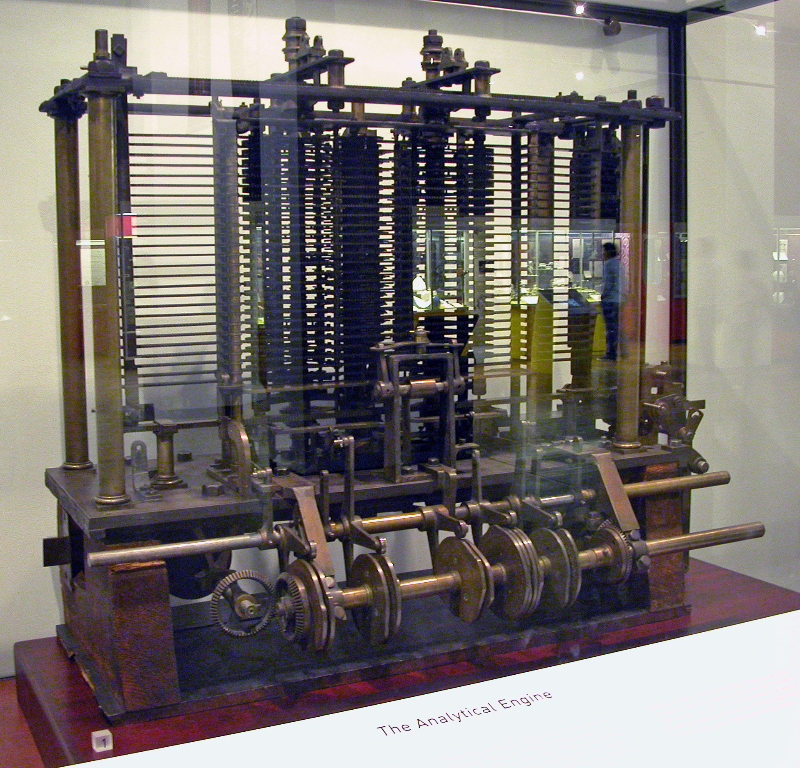
Prototype (1871) non terminé de la machine analytique de Babbage, exposée au
Des machines pour chiffrer et decrypter des informations
La période de la seconde guerre mondiale a vu emerger des machines électromecaniques plus efficaces que celles mécaniques.
Ces machines ne sont pas Türing-complètes.
- 1938-1943 La Bombe, un supercalculateur est utilisé pour le décryptage d’[Enigma](https://fr.wikipedia.org/wiki/Enigma_(machine), une machine utilisant un système de rotors pour produire un chiffrement mécanique. Les anglais, français et polonais travaillent sur le déchiffrage en testant des combinaisons. La Bombe a été conçue pour les attaques de force brute. Cette machine abat par jour le travail de dix mille décrypteurs. C’est le mathematicien Alan Turing qui parvient à casser le chiffre grâce à l’utilisation d’une version améliorée de cette machine.

La Bombe - version britannique
- 1943-1945 Les machines du projet Colossus permettent de décrypter les machines de Lorentz. Le premier, Colossus Mark 1, est opérationnel en décembre 1943: constitué de 1500 tubes à vide, il accomplissait 5000 opérations par seconde.
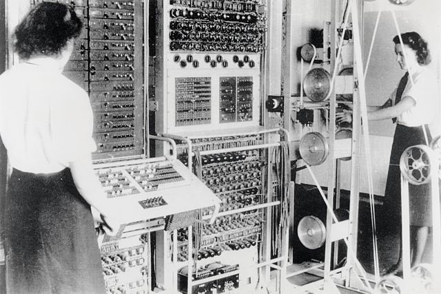
Colossus Mark2. Le panneau incliné à gauche sert
Colossus n’est pas une machine universelle, mais c’est bien le premier processeur électronique, numérique, et partiellement programmable de l’histoire. Cette machine montre que l’électronique peut être utilisé pour le traitement numérique à grande vitesse.
Vers 1940 plusieurs spécialistes développent des calculateurs à programme externe, suivant le projet de machine analytique de Babbage, en y incluant des relais électriques: Zuse, Coufignal, Aiken, Stibitz… Ces machines utilisaient des cartes ou rubans perforés, et étaient donc des calculateurs à programme externe.
Aucun n’avait eu l’idée d’une machine à programme enregistré, concept essentiel pour les machines électroniques.
Machines électromécaniques dans la lignée conceptuelle de Babbage
- 1938 le Z1, 1941 le Z3 (Konrad Zuse), est un ordinateur électromécanique utilisant le système binaire et lisant son programme sur une bande perforée. Le Z3 contenait plus de 2000 relais électromécaniques, pesait une Tonne et consommait plus de 4kW. Il comprend une mémoire, un dispositif de contrôle et une unité arithmétique calculant en binaire sur des nombres à virgule flottante! Les données et les instructions sont perforées sur du film de cinema, plus solide que des rubans en papier. Il était capable d’effectuer une addition en 0,8 s. Sa fréquence était de 5,3 Hertz, assez lente à cause des relais. A l’epoque, aucun appareil ne pouvait rivaliser.
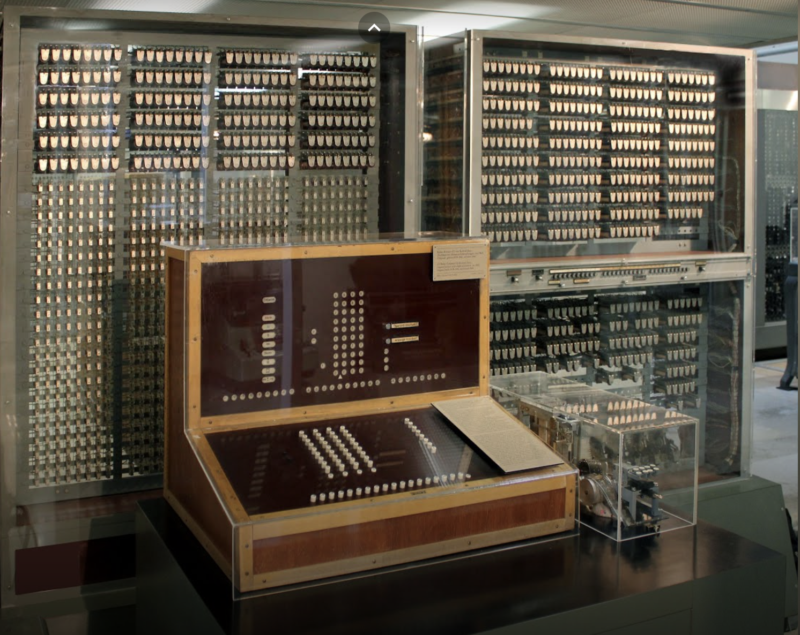
Z3: the First Functional Programm-Controlled Automatic Calculating Machine -
Zuse était le premier à concevoir que les fonctions de contrôle pouvaient aussi s’exprimer et être stockées sous forme numérique, donc à créer une machine programmable. Ce qui permettait de changer de programme sans avoir à modifier les connexions.
Si Ada Lovelace, élève de Babbage, fut la première programmeuse théorique d’une machine inexistante, Zuse fut pour sa part le premier programmeur d’une machine réelle en pratique.
Les calculateurs géants
Les premiers ordinateurs étaient des machines électromecaniques, fabriquées à l’unité après des années de recherche et developpement. Leur taille était immense, de même que leur consommation électrique. Le temps passé à leur maintenance et réparation était important (plus de 50%). Leur programmation était très rudimentaire, et leurs pannes, fréquentes.
On ne pouvait pas implémenter des algorithmes trop complexes. Même s’il s’agissait, formellement, de machine universelle. Ils repondaient alors à un besoin de calculer.
Les opérations à réaliser sont entrées à la main. Les données sont lues sur une carte perforée.
Ces machines ont d’autres defauts:
- il n’y a pas de distinction entre la fonction mémoire et la fonction calcul.
- pas d’unité centrale généraliste, mais une juxtaposition d’accumulateurs et d’unités spécialisées
- la programmation se fait par cablage ou en positionnant des interrupteurs. Ces machines nécessitent que l’on change leur câblage à chaque type d’opération.
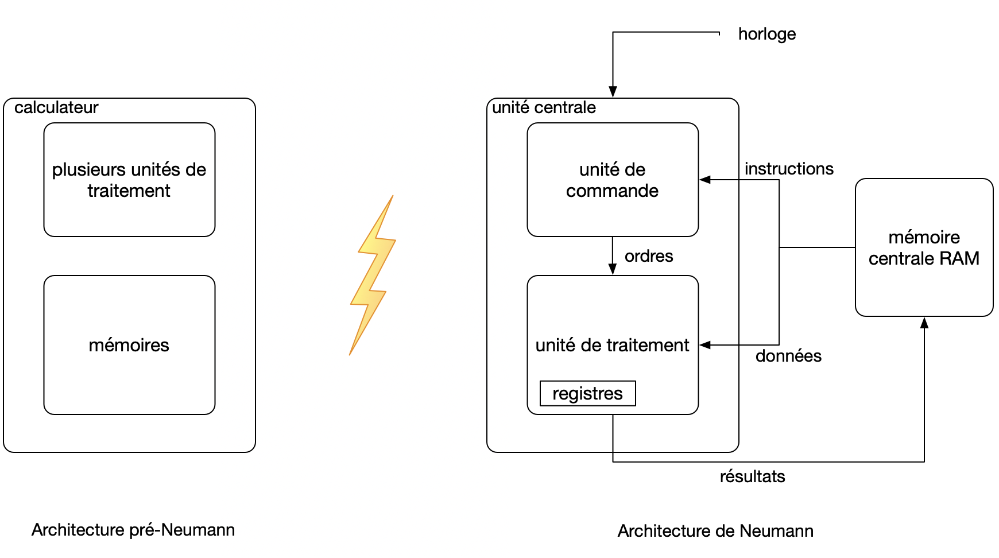
illustration de la différence entre supercalculateurs
| année | machine | unité logique | vitesse de calcul | remarques |
|---|---|---|---|---|
| 1944 | calculateur Harvard Mark 1 (IBM) | 3300 relais | 3 addition sur 23 chiffres par s | |
| 1945 | ENIAC | 1800 tubes (technologie superieure aux relais) | 5000 additions par s | a servi à calculer la faisabilité de la bombe H |
| 1948 | EDSAC | lignes à retard sur mercure | programme écrit en binaire | |
| 1951 | UNIVAC | 5 200 tubes à vide | 1 905 opérations par seconde | utilisé par CBS pour prédire l’issue de l’élection présidentielle de 1952. 13 tonnes. consomme 125 kW. L’unité accueillant la mémoire à mercure fait 4,3 m × 2,4 m × 2,6 m à elle seule. Le système au complet occupe 35,5 mètres carrés. |
| 1962 | Atlas (Manchester) | Les 96 ko de mémoire, réalisée en tores de ferrite étaient étendus à l’aide des 576 ko stockés sur tambour magnétique | ||
| 1964 | CDC 6600 | entre 1 et 10 mégaflops (millions d’opérations par s) |
Remarque: l’ENIAC sera améliorée en 1948: elle intègre alors la notion d’instruction et de programme, ce qui correspond au modèle classique d’ordinateur à programme enregistré. C’est aussi le premier ordinateur binaire, ne comportant plus de pièces mécaniques. (Mauchly et Eckert). Il exécute son premier programme le 12 avril, et son premier programme de production le 17 avril. La simulation de Monté Carlo exécutée le 12 avril 1948 par l’ENIAC est la plus ancienne trace de programme enregistré connue à ce jour.
Les premiers ordinateurs fabriqués en série
- IBM 650, le premier ordinateur fabriqué en série (1955)
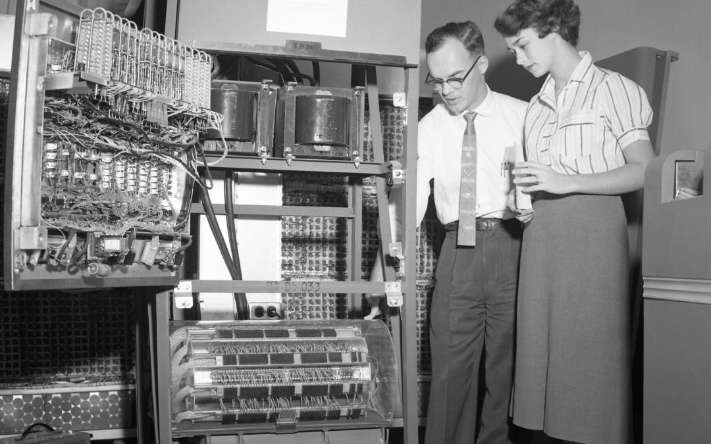
Cet ordinateur n’a pas encore de transistors mais des tubes à vide.
- IBM 7090, le premier ordinateur à transistors (1959)
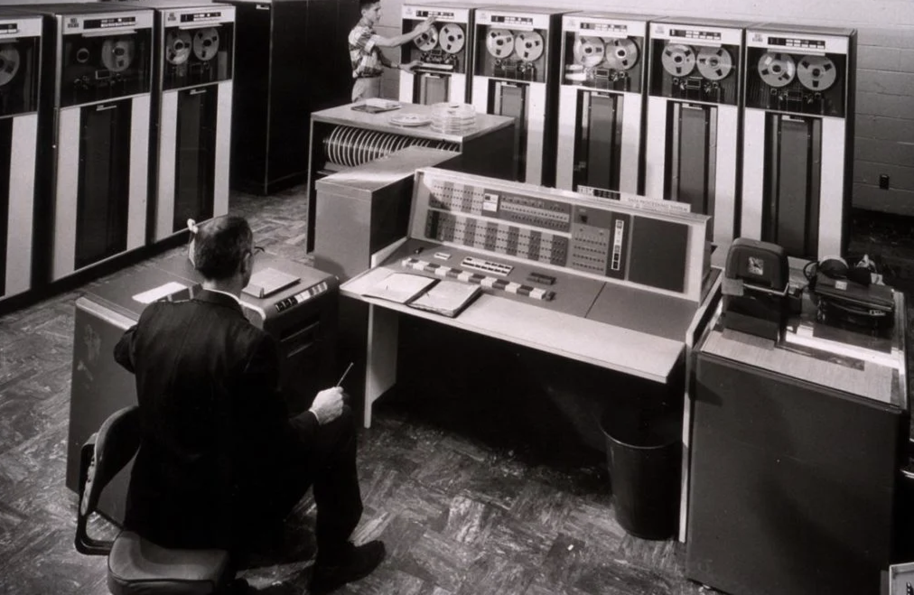
Machines universelles
- 1945 En tirant les conclusions de réalisations électroniques secrètes menées pendant la guerre, deux documents apparaissent et definissent ce que l’on nommera ordinateur, le calculateur numérique à programme enregistré. Les motivations des deux hommes sont différentes:
- John Von Neumann: qui cherche à developper des moyens pour les Universités pour leurs besoins de calculs mathématiques.
- Alan Turing: qui veut réaliser une machine à traiter les informations.
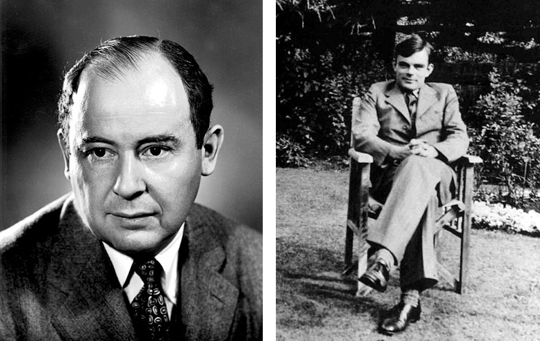
La contribution de Turing à l’avènement des ordinateurs
Le binaire
Contrairement à Babbage, Türing se rend compte que les opérations arithmétiques ordinaires peuvent être traduites dans le cadre de la logique booléenne, sous forme de circuits logiques (booléens). Il conçoit comme première machine un multiplicateur booléen électrique.
Il prolonge l’idée de Gödel de coder les opérateurs, les instructions , et les fonctions (des propositions) par des nombres entiers.
Traiter des instructions revient à calculer sur des nombres entiers, écrits en binaires.
Les algorithmes
Le raisonnement mathématique est une combinaison:
- d’intuition
- d’ingéniosité, de procédures
L’idée de Türing est de diminuer la part d’intuition et d’augmenter celle de procédure.
Par exemple, lorsque l’on réalise une opération de tri, on le fait d’abord de manière intuitive. Pour qu’une machine soit capable de le réaliser, il faudra en dégager une procédure.
Machine de Türing
C’est une machine mathématique permettant la manipulation réglée de signes. Son rôle est de transformer les symboles fournis en entrée, en symboles lisibles en sortie.
Cette machine utilise les instructions d’un programme (une tables d’états) et repère un état d’un registre, états qui définissent les étapes de l’algorithme.
C’est une machine conceptuelle, qui a permi de définir ce qu’est un problème calculable.
Une machine de Tûring est conçue pour résoudre une classe de problèmes donnés: si une machine de Türing est programmée pour résoudre un opération d’addition, alors elle pourra résoudre TOUTES les opérations d’addition, quelles que soient les données en entrée.
Une machine de Türing particulière contient donc, par avance, un programme.
Une machine de Türing universelle est capable de résoudre TOUS les problèmes possibles de toutes les machines de Türing possibles (contient tous les programmes existants ou à venir).
John Von Neumann fait référence de manière explicite à ce concept lorsqu’il présente l’architecture à laquelle doivent se conformer les machines universelles:
Un ordinateur se définit comme une instance matérielle, concrète, d’une Machine de Turing Universelle
Calculabilité
Si un problème (proposition, fonction), que l’on peut énoncer sous forme mathématique, peut être résolu par une machine de Tûring, alors celui-ci est calculable. Il doit exister un nombre fini d’instructions pour résoudre ce problème.
Comparer des programmes
Il devrait être possible de comparer des programmes en construction en évaluant le nombre de pas de calcul qui serait nécessaire. Tûring fait émerger la notion de compléxité.
Architecture Von Neumann
Definition: Un ordinateur est un appareil programmable qui stocke son programme dans une mémoire modifiable. article wikibook sur l’architecture de base d’un ordinateur
John Von Neumann (1945) est le concepteur de l’architecture de la machine universelle et de ses différents dispositifs:
- processeur
- mémoires
- dispositifs d’entrée/sortie
Il est à l’origine du concept de programme enregistré: le stockage des données et des instructions sous forme d’impulsions électriques à l’intérieur même de la machine qui pourra les consulter à l’instant et à la vitesse qui lui convient. En remplacement du traitement mécanique alors utilisé, ce qui necessitait une vaste manipulation de cables et de boutons à placer sur la bonne position pour specifier le nouveau problème. Charles Babbage avait déjà eut cette idée un siècle plus tôt.
illustration de la différence entre supercalculateurs
Von Neumann est également le concepteur de l’ordinateur IAS à Princeton.
Le stockage était alors réalisé par des tubes cathodiques, chacun de 1024 bits.
Dans l’architecture de Von Neumann, un ordinateur est constitué de quatre parties distinctes:
- Le CPU: Central Processing Unit (unité centrale de traitement) appelé aussi processeur;
- La mémoire où sont stockés les données et les programmes. La mémoire se divise entre:
- une mémoire volatile (RAM ou mémoire vive) qui gère les programmes et les données
- une mémoire permanente (ROM) qui gère les programmes de base de la machine.
- des bus qui sont des fils conduisant des impulsions électriques et qui relient les différents composants;
- des entrées-sorties (E/S ou I/O input/Output) pour échanger avec l’exterieur.
Les échanges entre la mémoire et les registres du CPU se font via les bus selon une chronologie séquencée par l’horloge et suivant la nature des échanges: données ou adresse. Cette horloge est externe au processeur.
Un programme est une suite d’instructions codées sous forme binaire. Il précise la suite d’instructions exécutées par l’ordinateur. Ces instructions, codées en binaire peuvent être exprimées pour un humain en langage assembleur, le langage de plus bas niveau (une traduction mnémonique du binaire).
Le processeur CPU
L’unité de traitement est un circuit qui s’occupe de faire des calculs et de manipuler l’information provenant des entrées-sorties ou récupérée dans la mémoire. Dans les ordinateurs, l’unité de traitement porte le nom de processeur, ou encore de Central Processing Unit, abrévié en CPU. Tout processeur est conçu pour effectuer un nombre limité d’opérations bien précises, comme des calculs, des échanges de données avec la mémoire, etc.
Les processeurs multicœurs: regroupement de plusieurs processeurs dans le même boitier. Un processeurs multicœurs, contient plusieurs cœurs, chaque cœur pouvant exécuter un programme tout seul. Chaque coeur contient un séquenceur d’instruction, des registres, une unité de calcul. Mais il manque certains circuits dédiés au processeur principal, comme les circuits de communication avec la mémoire. Les systemes d’exploitation se sont adaptés à cette nouvelle architecture. Un processus peut lancer plusieurs threads, partagés sur les différents coeurs.
Pour calculer plus rapidement, le processeur utilise une mémoire plus rapide que la RAM: Les caches, qui sont des mémoires intermédiaires entre les registres internes du micro-processeur et la mémoires vive.
Pour un processeur multicoeur, certains caches sont dédié à chaque “coeur”, d’autres sont partagés. wikipedia - multicoeur
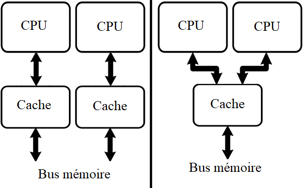
cache dédié / cache partagé
La puissance de la machine augmente significativement en élevant la fréquence de calcul, supérieure à celle d’un processeur monocœur. Mais cette méthode a ses limites: En effet, l’augmentation de fréquence d’un processeur cause rapidement des problèmes de surchauffe.
Les coprocesseurs: Ce sont des processeurs qui complètent un processeur principal pour certaines fonctions wikipedia:
- des coprocesseurs arithmétiques: assurent certains types de calculs que ne peuvent pas realiser le processeur principal (division entiere, flottante, racines carées…). Par exemple sur la Nitendo DS.
- coprocesseurs pour le rendu 2D/3D et les coprocesseurs sonores: sur les anciennes consoles de jeux vidéo, comme La Nintendo 64, la Playstation et autres consoles de cette génération ou antérieure.
- coprocesseurs pour l’accès aux périphériques: L’accès aux périphériques peut demander beaucoup de puissance de calculs. La Nintendo 3DS disposait d’un processeur principal de type ARM9, du coprocesseur pour les divisions, et d’un second processeur ARM7. L’ARM 7 était le seul à communiquer avec les périphériques et les entrées-sorties.
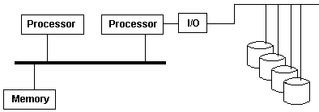
mémoires ROM et RWM
Les mémoires ROM stockent des programmes à exécuter et sont lues directement par le processeur. Pour les mémoires RWM ou RAM, on peut y acceder en lecture et écriture.
Les RWM stockent les variables du programme à exécuter, des données que le programme va manipuler. Selon l’architecture de la machine, le programme peut être entièrement stocké dans la ROM, ou bien être partagé entre la ROM et la RWM.
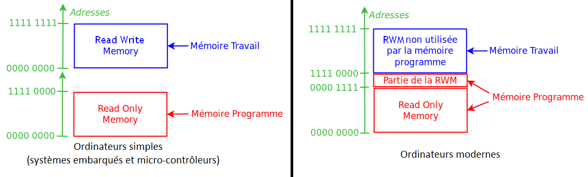
adressage differencié ou commun pour les mémoires - source : wikibooks
Les bus
Les données doivent circuler entre les différentes parties d’un ordinateur, notamment entre la mémoire vive et le CPU. Le système permettant cette circulation est appelé bus. Il existe, sans entrer dans les détails, 3 grands types de bus: adresses, données, de contrôle.
Les péripheriques
Les périphériques sont très divers. On les classe en périphérique d’entrée, sortie, entrée-sortie.
Toutes les entrées-sorties contiennent des registres d’interfaçage, qui permettent de faire l’intermédiaire entre le périphérique et le reste de l’ordinateur. source:wikipedia
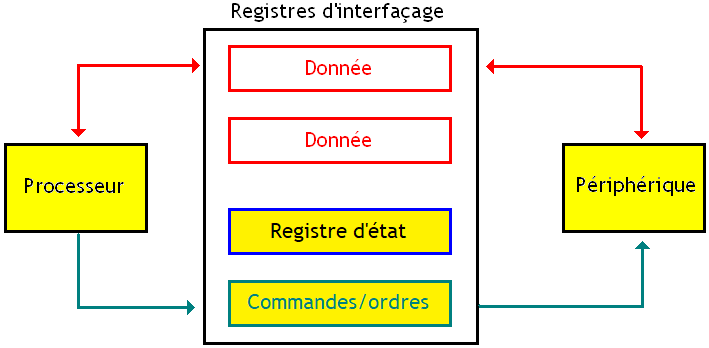
registres d’interfaçage - wikipedia
Loi de Moore
Des années 1970 aux années 2000, la miniaturisation des circuits a suivi al Loi de Moore qui prédit un doublement du nombre de transistors par cm2 tous les 18 mois. Cette miniaturisation et l’augmentation des fréquences d’horloge (qui ont aussi doublé environ tous les 18 mois) ont permis d’augmenter la puissance des processeurs de façon exponentielle pendant près de 40 ans.
La figure suivante montre l’évolution du nombre de transistors pour un même élement de surface: source-wikipedia
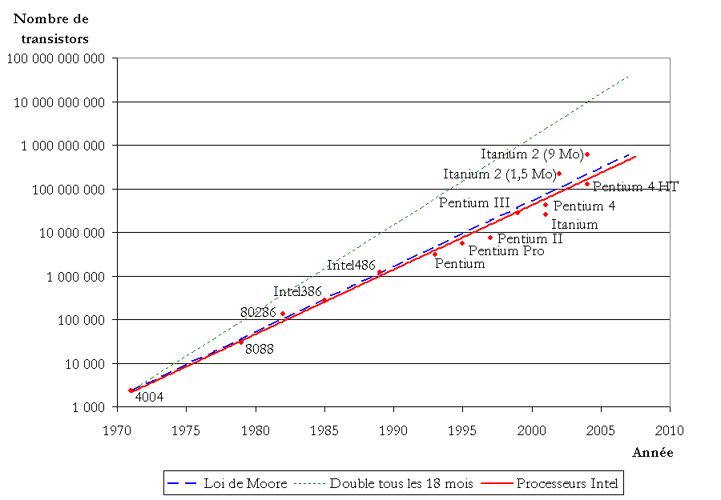
illustration de la loi de Moore - source wikipedia
L’image ci-dessous illustre, elle, l’evolution de la finesse de gravure
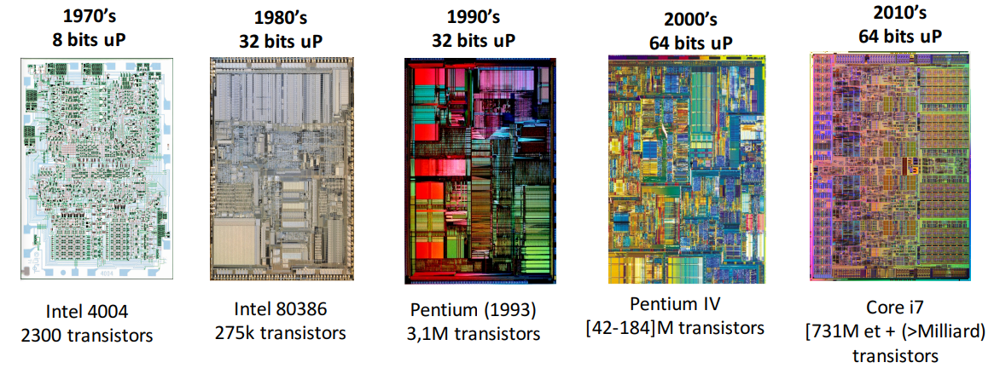
illustration de la finesse de gravure dans le temps - source eskool.gitlab.io/
Architecture Von Neumann vs Harvard
La différence de ces architectures repose sur la gestion des mémoires pour les programmes et données:
- Von Neumann: un même support (RWM) contient programme et données pour les processus en cours. Les instructions des programmes sont dupliquées dans la RAM. Elles existent alors à 2 endroits distincts de la machine: dans la mémoire de masse (persistante) du systeme, mais aussi dans la RAM. Il serait assez inefficace d’executer le programme depuis la mémoire de masse, car celle-ci est beaucoup plus lente.
- Harvard: Données dans une mémoire de travail différente de la RAM (mémoire flash) utilisée pour les programmes. Pas de duplication du programme. Economie des supports de stockage, et economie d’énergie.
Voir la video suivante expliquant la différence entre ces 2 architectures:
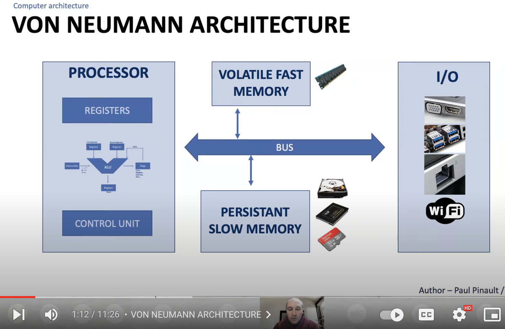
MooC Arduino #4 - Architecture de Von-Neumann, Harvard et Microcontrôleurs
L’architecture Harvard est utilisée pour les microcontrôleurs, pour lesquels le besoin de miniaturisation amène à intégrer tous les composants internes dans une même puce (onchip). Les microcontrôleurs embarquent une mémoire de type EEPROM (electrically erasable programmable read only memory 64-256ko), suffisement rapide d’accès pour l’utiliser directement, et sans avoir besoin de charger le programme dans une nouvelle RAM.
La machine avec architecture Harvard peut aussi gérer une mémoire de masse (persistante) comme un disque dur, ou carte flash externe. Il s’agit alors d’une extension, utile pour augmenter la capacité de la mémoire flash interne, qui est souvent réduite.
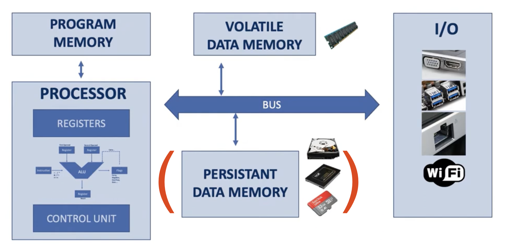
architecture Harvard
Compléments sur la différence des architectures: www.arrow.com/fr-fr/research-and-events
Les Systeme On Chip
Un Circuit intégré, c’est un circuit électronique conventionnel qui a été mis sur une plaque de silicium de quelques $cm^2$. La consommation électrique, et l’echauffement sont beaucoup inférieurs, et la qualité bien supérieure en rapport aux premieres machines qui n’en disposaient pas. Cela a permis une diminution du coût.
source image: extrait de la video youtube:MOOC Arduino, chaine Paul Pinault
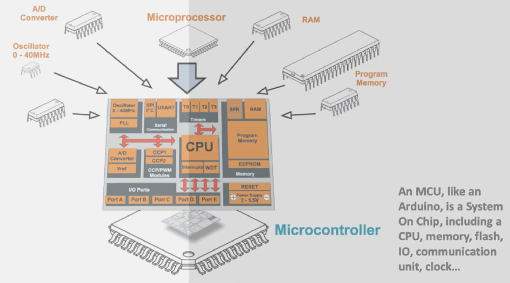
microcontroleur: systeme onchip
Un « système sur une puce » est un système complet embarqué sur une seule puce (“circuit intégré”), comprenant de la mémoire, un ou plusieurs microprocesseurs, des périphériques d’interface (processeur graphique GPU…), et autres composants nécessaires à la composition du SoC complet…
Ces systèmes permettent de réduire l’encombrement, la consommation d’énergie (courants faibles), et de diminuer le coût de production (gros volumes de fabrication). L’inconvenient principal est qu’il est n’est pas possible de modifier soi-même ses composants, et de l’upgrader.
Voir l’excellent cours sur https://eskool.gitlab.io/tnsi/soc/
Liens et bibliographie
- cours sur l’architecture Von Neumann lattice.cnrs.fr
- article presentant les technologies de la machine à calculer aux ordinateur de 4e génération: Evolution des machines à calculer - Alexandre Faribault
- 5000 ans d’histoire Deutsches Museum
- histoire du stockage des données-TomsHardware
- Fiche pdf cours architecture - niveau terminale NSI
- présentation ppt d’un cours de DIU informatique sur l’architecture ecursus.univ-antilles.fr
- Sciences et avenir, hors série, Les géants de la Science: Alan Türing